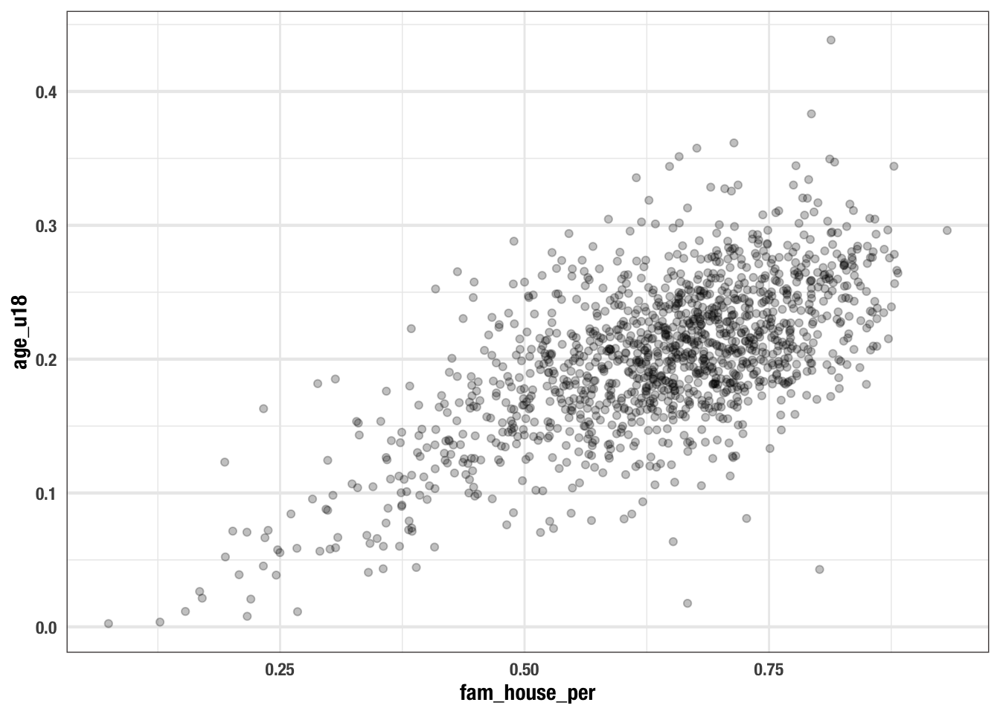
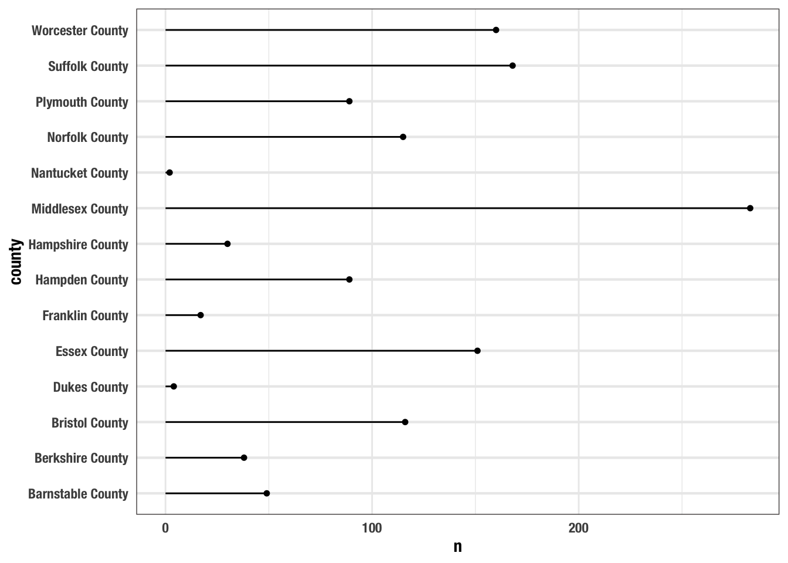

Chapter 2 01 - Visual Analysis
2.1 The American Community Survey
- lets begin by visualizing relationships
- we’ll work with data from the american community survey.
- this is data you will get really familiar with
- what is the acs and why do we love it?
- https://www.vox.com/explainers/2015/12/3/9845152/acs-survey-defunded
- random sample of individuals across the us
- random samples are used as they representative and statistically non-biased
- the information is used to determine funding
- tells us about age, ethnicity, country of origin, occupation, education, voting behavior, etc.
- this information is available in the decennial census (in the constitution)
- ACS tells us about rates rather than the actual number of people in a thing
- one of the major problems is that some populations are under-represented
- this one line of code will install the packages that we need to do this work. Don’t be too concerned about what a package is. We will go over this in more detail later. Very simply, a package is a collection of functions that make certain things possible or easier to do in R. We like to use packages because reinventing the wheel is never fun.
What is the relationship between education and income?
we have a data frame loaded this is very similar to a table in excel each column is a variable
## # A tibble: 1,456 x 7
## med_house_income less_than_hs hs_grad some_coll bach white black
## <dbl> <dbl> <dbl> <dbl> <dbl> <dbl> <dbl>
## 1 105735 0.0252 0.196 0.221 0.325 0.897 0.0122
## 2 69625 0.0577 0.253 0.316 0.262 0.885 0.0171
## 3 70679 0.0936 0.173 0.273 0.267 0.733 0.0795
## 4 74528 0.0843 0.253 0.353 0.231 0.824 0.0306
## 5 52885 0.145 0.310 0.283 0.168 0.737 0.0605
## 6 64100 0.0946 0.294 0.317 0.192 0.966 0.00256
## 7 37093 0.253 0.394 0.235 0.101 0.711 0.0770
## 8 87750 0.0768 0.187 0.185 0.272 0.759 0.0310
## 9 97417 0.0625 0.254 0.227 0.284 0.969 0.00710
## 10 43384 0.207 0.362 0.262 0.124 0.460 0.105
## # … with 1,446 more rowswe can visualize the relationship to get a better understanding. we can look at income and college grad rates
start building a visualization with ggplot() function with the acs_edu object.
Functions are characterised by the parentheses at the end of them. Functions do things. Objects hold information.

we add to this plot
determine what we want to plot with the aesthetics aes() function inside of the ggplot().
want to specify x and y. These are called arguments. To set argument we use the = sign.
set x to bach and y to med_house_income
- notice how the plot is being filled a bit more?
- now we need to specify what type of plot we will be creating.
- add geometry, or geoms. We use the plus sign
+to signify that we are adding on top of the basic graph - there are many different kinds of charts we can use we will get into these a bit more later.
- a common way of visualizing a relationship between two variables is with a scatterplot
- a scatter plot graphs points for each x and y pair. you’ve likely made a few of these in your primary education
- to add points to the graph we use
geom_point(), remember, we are adding a layer so we use the plus sign - for legibility we add each new layer on a new line. R will indent for you. Good style is important. We’ll get into this later
- notice that there is a positive linear trend.
- lets break that down:
- when the point point up to the right, that is positive, down to the left is negative.
- for each unit we go up on the x (bach) we tend to go up on the y (hh income)
- linear means it resembles a line
- when the point point up to the right, that is positive, down to the left is negative.
- to finish this up we can add some informative labels
- we will add a labels layer with the function
labs() - give them more legible labels. we will give each axis a better name and give the plot a title
- the arguments we will set to the labs function are
x,yandtitle. Rather intuitive, huh?- x = “% of population with a Bachelor’s Degree”
- y = “Median Household Income”
- title = “Relationship between Education and Income”
- note that for each argument I have a new line. again, this helps with legibility
ggplot(acs_edu, aes(x = bach, y = med_house_income)) +
geom_point() +
labs(x = "% of population with a Bachelor's Degree",
y = "Median Household Income",
title = "Relationship between Education and Income")
- what can we determine from this graph?
- in the sociology literature there is a lot about the education gap between white and black folks
- can we see this in a graph?
- we can modify our existing plot to illustrate this too.
- we can map the % white to the color of the chart
- we add to this within the aesthetics. The
aes()thetics is where we will determine things like size, group, shape, etc. - set the
colorargument to thewhitecolumn - while we’re at it, we can add a subtitle to inform that we’re also coloring by % white
ggplot(acs_edu, aes(x = bach, y = med_house_income, color = white)) +
geom_point() +
labs(x = "% of population with a Bachelor's Degree",
y = "Median Household Income",
title = "Relationship between Education and Income",
subtitle = "Colored by whiteness") 
- what can we conclude now?